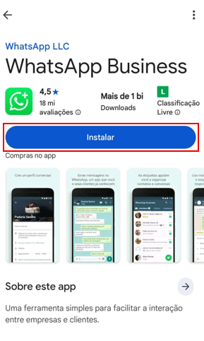
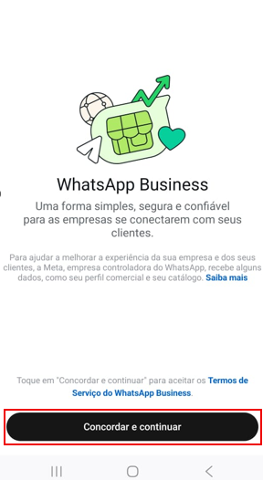
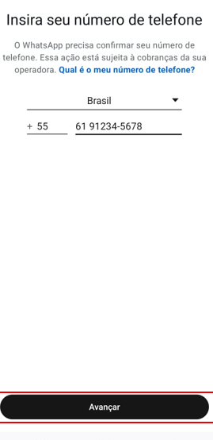
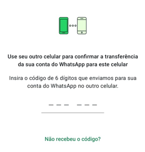

O Que Você Vai Aprender
- Diferença entre WhatsApp normal e WhatsApp Business
- Como baixar e instalar o WhatsApp Business
- Configurar perfil comercial completo
- Criar catálogo de produtos com fotos e preços
- Configurar mensagens automáticas de boas-vindas e ausência
- Criar link direto para seu WhatsApp
Antes de Começar: Você precisa ter um número de celular (pode ser o mesmo do WhatsApp normal). O WhatsApp Business é gratuito e não tem propagandas!
WhatsApp Normal vs WhatsApp Business
Muita gente não sabe, mas existem DUAS versões do WhatsApp. Veja as diferenças:
| Recurso |
WhatsApp Normal |
WhatsApp Business |
| Perfil |
Nome e foto |
Nome, foto, horário, endereço, site, categoria |
| Catálogo |
Não tem |
Pode criar catálogo de produtos |
| Mensagens Automáticas |
Não tem |
Boas-vindas e ausência |
| Etiquetas |
Não tem |
Organizar conversas (cliente, pedido, etc) |
| Respostas Rápidas |
Não tem |
Mensagens prontas |
| Estatísticas |
Não tem |
Ver quantas mensagens enviou/recebeu |
| Preço |
Gratuito |
Gratuito |
Boa Notícia: Você pode ter os DOIS WhatsApps instalados no mesmo celular! Um para uso pessoal e outro para negócio.
Por Que Usar WhatsApp Business?
Se você tem qualquer tipo de negócio (mesmo pequeno!), o WhatsApp Business é essencial porque:
- Passa mais profissionalismo - Clientes veem que é um negócio sério
- Economiza tempo - Mensagens automáticas respondem por você
- Organiza melhor - Etiquetas para separar clientes, pedidos, dúvidas
- Mostra produtos - Catálogo com fotos e preços sempre acessível
- Facilita vendas - Cliente vê tudo e compra mais fácil
- É gratuito - Não precisa pagar nada!
1
Baixar o WhatsApp Business
Abra a loja de aplicativos do seu celular:
- Android: Google Play Store (ícone colorido)
- iPhone: App Store (ícone azul)
Na barra de pesquisa, digite: WhatsApp Business
Atenção: Procure pelo app com o nome "WhatsApp Business" e o ícone VERDE com um "B" dentro. É o oficial do WhatsApp!
Toque em "Instalar".
Aguarde o download terminar (usa cerca de 50MB de internet).

WhatsApp Business na loja de aplicativos
2
Abrir e Concordar com os Termos
Após a instalação, toque em "Abrir".
Você verá uma tela de boas-vindas explicando o que é o WhatsApp Business.
Toque em "Concordar e Continuar".
Dica: Leia os termos se quiser, mas basicamente você está concordando em usar o app conforme as regras do WhatsApp.

Tela de boas-vindas do WhatsApp Business
3
Cadastrar Seu Número
Agora você precisa escolher um número de telefone para o WhatsApp Business.
Você tem 3 opções:
- Usar um número diferente - Se você tem 2 chips no celular
- Usar um número fixo - Telefone fixo da sua loja/casa
- Usar o mesmo número - Migrar seu WhatsApp normal (seus chats serão transferidos)
Importante: Se você usar o mesmo número do WhatsApp normal, suas conversas pessoais serão transferidas para o Business. Por isso, é melhor usar um número diferente se possível!
Como fazer:
- Selecione seu país (Brasil +55)
- Digite o número de telefone (com DDD, sem espaços)
- Exemplo:
61912345678
- Toque em "Avançar"

Digite seu número com DDD
4
Verificar o Número (Código SMS)
O WhatsApp vai enviar um código de 6 dígitos por SMS para o número que você digitou.
O que fazer:
- Aguarde o SMS chegar (geralmente é automático em segundos)
- O código será detectado automaticamente
- Se não detectar, digite manualmente
- Toque em "Avançar"
Dica: Se não receber o SMS em 2 minutos, você pode pedir para receber por ligação. O WhatsApp te liga e fala o código.

Digite o código recebido por SMS
5
Configurar Perfil do Negócio
Agora é hora de configurar as informações do seu negócio! Essa parte é MUITO importante porque é o que seus clientes vão ver.
Foto do Perfil
Toque no círculo da foto para adicionar:
- Opção 1: Tirar foto agora (da fachada, logo, você)
- Opção 2: Escolher da galeria
Dica: Use uma foto clara, que mostre bem seu negócio ou produto principal.
Nome do Negócio
Digite o nome da sua empresa, loja ou negócio.
Exemplos:
- Padaria Pão Quente
- Maria - Doces Caseiros
- Auto Peças JB
- Salão de Beleza Glamour
Categoria
Escolha a categoria que melhor define seu negócio:
- Alimentação
- Vestuário
- Serviços
- Beleza e Estética
- Etc... (tem muitas opções!)
Depois de preencher tudo, toque em "Avançar".
6
Adicionar Informações Detalhadas do Negócio
Agora vamos completar seu perfil com TODAS as informações importantes!
Como acessar:
- Toque nos 3 pontinhos no canto superior direito
- Toque em "Configurações"
- Toque em "Ferramentas Comerciais"
- Toque em "Perfil Comercial"
Preencha TODOS os campos:
| Campo |
O Que Colocar |
| Descrição |
Explique o que você vende/faz (até 256 caracteres) |
| Horário de Atendimento |
Ex: Segunda a Sexta 9h-18h, Sábado 9h-13h |
| Endereço |
Rua, número, bairro, cidade (se tiver loja física) |
| Site |
Seu site, Instagram, Facebook (se tiver) |
| E-mail |
E-mail de contato do negócio |
Por que preencher tudo? Quanto mais completo seu perfil, mais confiança passa para os clientes! Eles veem que é um negócio profissional e sério.
7
Criar Catálogo de Produtos
Esta é uma das funcionalidades MAIS ÚTEIS do WhatsApp Business! Você pode mostrar seus produtos com fotos, descrição e preço.
Como criar:
- Toque nos 3 pontinhos no canto superior direito
- Toque em "Ferramentas Comerciais"
- Toque em "Catálogo"
- Toque em "Adicionar produto ou serviço"
Para cada produto, adicione:
1. Foto do Produto
- Tire uma foto clara e bem iluminada
- Ou escolha uma da galeria
- Dica: foto em fundo branco fica mais profissional
2. Nome do Produto
- Ex: Bolo de Chocolate 1kg
- Ex: Calça Jeans Masculina Tam 42
3. Preço
- Digite o valor (ex: R$ 45,00)
- Será mostrado para todos os clientes
4. Descrição
- Descreva detalhes importantes
- Tamanhos, cores, ingredientes, etc
- Ex: "Bolo de chocolate com recheio de brigadeiro e cobertura de ganache. Serve 8 pessoas."
5. Link do Produto (Opcional)
- Se você vende em outra plataforma, pode colocar o link
Toque em "Salvar".
Dica: Comece adicionando 5 produtos principais. Depois você pode adicionar mais com calma!
Como os clientes veem:
Quando alguém abrir seu WhatsApp Business, vai ver um botão "Ver catálogo". Ao clicar, todos os seus produtos aparecerão organizados com fotos e preços!
8
Configurar Mensagem de Boas-Vindas
A mensagem de boas-vindas é enviada AUTOMATICAMENTE quando alguém manda a primeira mensagem para você. É como um atendente virtual!
Como configurar:
- Toque nos 3 pontinhos no canto superior direito
- Toque em "Ferramentas Comerciais"
- Toque em "Mensagem de boas-vindas"
- Ative a opção
- Toque em "Editar mensagem"
Exemplo de mensagem de boas-vindas:
Olá! Bem-vindo(a) à [Nome do seu negócio]!
Obrigado pelo contato!
Confira nosso catálogo de produtos
⏰ Horário de atendimento: Segunda a Sexta 9h-18h
Endereço: [Seu endereço]
Como posso te ajudar hoje?
Dicas:
- Use emojis para deixar mais amigável
- Inclua horário de atendimento
- Mencione o catálogo
- Seja simpático e profissional
9
Configurar Mensagem de Ausência
A mensagem de ausência é enviada quando você está fora do horário de atendimento. Assim, o cliente sabe quando você vai responder!
Como configurar:
- Toque nos 3 pontinhos no canto superior direito
- Toque em "Ferramentas Comerciais"
- Toque em "Mensagem de ausência"
- Ative a opção
- Escolha quando enviar:
- Sempre: toda vez que alguém mandar mensagem e você não responder em X minutos
- Fora do horário comercial: apenas quando estiver fechado
- Personalizado: escolher dias e horários específicos
- Toque em "Editar mensagem"
Exemplo de mensagem de ausência:
Olá!
Obrigado pela mensagem! No momento estou fora do horário de atendimento.
⏰ Horário de funcionamento:
Segunda a Sexta: 9h às 18h
Sábado: 9h às 13h
Responderei assim que possível! Fique à vontade para deixar sua mensagem que retorno em breve.
10
Criar Link Direto para Seu WhatsApp
Este é um SUPER TRUQUE que pouca gente sabe! Você pode criar um link que, quando clicado, abre uma conversa direto com você no WhatsApp.
Como funciona:
Quando alguém clica no link, o WhatsApp abre automaticamente com uma mensagem pronta para você!
Como criar o link:
O formato do link é: https://wa.me/5561912345678
Onde:
55 = código do Brasil61 = DDD912345678 = seu número
Exemplo completo:
Se seu número é (61) 99123-4567, o link fica:
https://wa.me/5561991234567
Você pode usar esse link em:
- Instagram (na bio ou stories)
- Facebook (postagens e página)
- Site do seu negócio
- E-mail marketing
- Panfletos digitais
- QR Code
Dica Bônus: Você pode adicionar uma mensagem automática no link!
Exemplo: https://wa.me/5561991234567?text=Olá!%20Vim%20pelo%20Instagram
Quando a pessoa clicar, o texto "Olá! Vim pelo Instagram" já virá escrito!
Recursos Extras do WhatsApp Business
Etiquetas (Labels)
Organize suas conversas com etiquetas coloridas!
Como usar:
- Abra uma conversa
- Toque no nome do contato
- Role até "Etiquetas"
- Escolha ou crie etiquetas como: "Novo cliente", "Pedido feito", "Aguardando pagamento"
Respostas Rápidas
Crie mensagens prontas para responder rapidamente!
Como criar:
- Vá em Configurações → Ferramentas Comerciais → Respostas Rápidas
- Toque em "Adicionar"
- Crie um atalho (ex: /oi)
- Escreva a mensagem completa
Para usar: Na conversa, digite /oi e a mensagem completa aparece!
Estatísticas
Veja quantas mensagens você enviou e recebeu!
Como ver:
- Configurações → Ferramentas Comerciais → Estatísticas
- Você verá gráficos de mensagens enviadas, recebidas e lidas
Dicas Profissionais para Usar Melhor
1. Responda Rápido: Clientes gostam de respostas rápidas. Tente responder em até 1 hora durante o horário comercial.
2. Use o Status: Poste no status do WhatsApp Business novidades, promoções, produtos novos. Seus contatos veem!
3. Atualize o Catálogo: Sempre que tiver produto novo, adicione no catálogo. Sempre que algo esgotar, remova.
4. Seja Educado e Profissional: Use emojis com moderação, escreva corretamente, seja sempre gentil.
5. Confirme Pedidos: Sempre confirme o pedido do cliente por mensagem (produto, quantidade, valor, endereço).
Dúvidas Comuns
1. Posso ter WhatsApp normal E Business no mesmo celular?
Sim! Você pode ter os dois instalados, mas precisam ser números diferentes. Perfeito para separar vida pessoal do trabalho!
2. O WhatsApp Business é pago?
Não! É 100% gratuito. Não tem mensalidade, não tem limite de mensagens, não tem propagandas.
3. Meus clientes precisam ter WhatsApp Business também?
Não! Seus clientes podem usar WhatsApp normal. Eles vão te ver como uma empresa e conseguem acessar seu catálogo normalmente.
4. Perco minhas conversas se migrar do WhatsApp normal?
Não! Se você usar o mesmo número, suas conversas são transferidas automaticamente para o Business.
5. Posso usar no computador?
Sim! Funciona igual ao WhatsApp normal. Acesse web.whatsapp.com e escaneie o QR Code.
6. Como sei se alguém viu minha mensagem?
Os dois "✓✓" azuis indicam que a pessoa viu. Se está cinza, foi entregue mas não visualizado ainda.
Resolvendo Problemas Comuns
Problema: "Número já registrado"
Solução:
- Este número já está usando WhatsApp ou WhatsApp Business
- Se for seu: desinstale o app antigo primeiro
- Se não for seu: use outro número
Problema: "Não consigo adicionar produtos ao catálogo"
Solução:
- Verifique se o perfil está completo
- Verifique conexão com internet
- Tente tirar foto nova (não use da galeria)
- Feche e abra o app novamente
Problema: "Mensagem automática não está enviando"
Solução:
- Verifique se está ativada nas configurações
- Veja se configurou o horário certo
- Teste enviando mensagem de outro número
Parabéns! Você Concluiu Este Tutorial!
Agora você sabe:
- Diferença entre WhatsApp normal e Business
- Instalar e configurar WhatsApp Business
- Criar perfil profissional completo
- Adicionar produtos no catálogo
- Configurar mensagens automáticas
- Criar link direto para seu WhatsApp
- Usar recursos avançados
Próximo passo: Coloque em prática! Comece adicionando seus primeiros 5 produtos no catálogo e teste enviar uma mensagem para você mesmo.